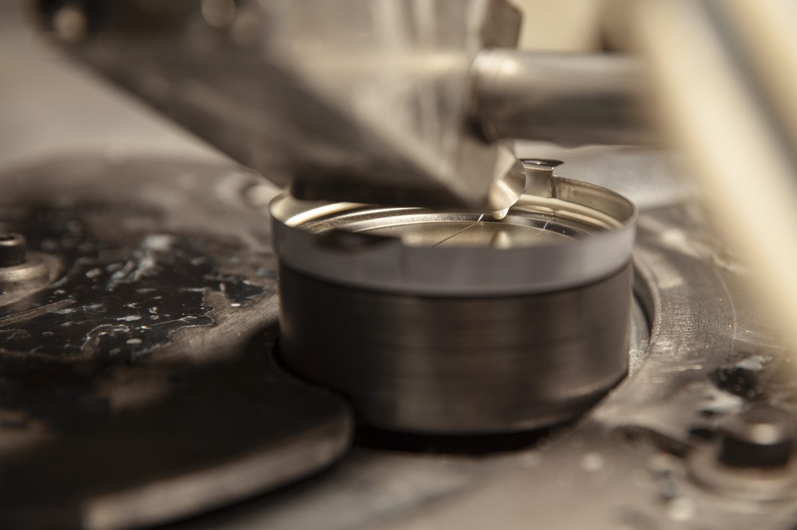
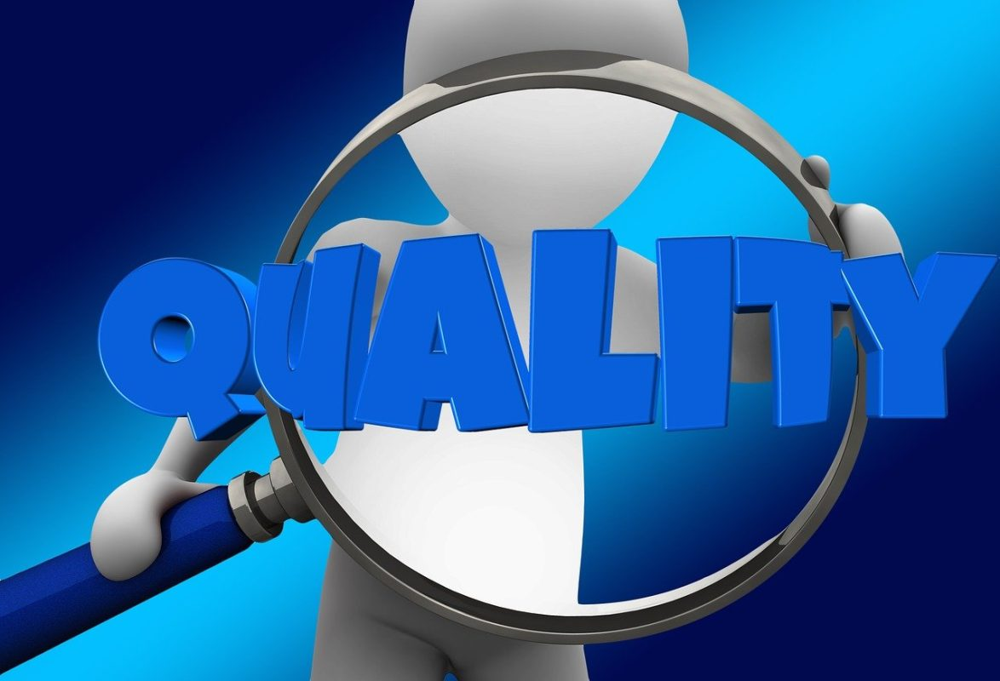

Metal, plastik ve fiber varil çemberleri ile aksesuarlarının üretiminde; kimya, gıda, ilaç ve petrol sektörlerine özel çözümler sunuyoruz. Yaklaşık 30 ülkeye ihracat yapan bir Kocaeli sanayi kuruluşuyuz.
Firmamız, metal, plastik ve fiber varil çemberleri ile aksesuarlarının üretimi konusunda faaliyet göstermektedir. Kimya, gıda, ilaç, petrol v.b. birçok alanda kullanım için özelleştirilmiş ürün yelpazemiz, müşterilerimize yüksek kalitesi ve aynı zamanda rekabetçi fiyatları ile büyük bir avantaj sağlamaktadır.
SilverRing, ambalaj sektöründe uzun yıllara dayanan deneyimi, uzman kadrosu ve güçlü mali yapısıyla yurt içinde lider konumda hizmet vermektedir. Küresel bir marka haline gelme yolunda ilerleyen SilverRing, çok uluslu şirketlerin global tedarikçisi olmayı başarmıştır.
Hakkımızda →


Kalite kontrol faaliyetlerimiz, proaktif yaklaşım esas alınarak "önleme" mantığı çerçevesinde ele alınmaktadır. Seri üretime geçmeden önce numune üretimi, test ve raporlama süreçleri titizlikle yürütülür.
ISO 9001 Kalite Yönetim Sistemi
ISO 14001 Çevre Yönetim Sistemi
ISO 45001 İş Sağlığı ve Güvenliği Yönetim Sistemi
ISO 10002 Müşteri Memnuniyeti Yönetim Sistemi
